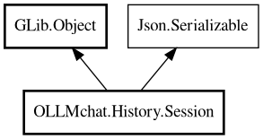

Session
Object Hierarchy:

Description:
public class Session : Object, Serializable
Session is a wrapper around Call.Chat that provides history persistence.
It uses SQ (SQLite) for database storage of metadata, and JSON files for complete session data including all messages.
Properties are wrappers around this.chat.client.model, etc. Messages come from this.chat.messages with a flag to include extra info
during JSON encoding.
Content:
Properties:
Static methods:
Creation methods:
Methods:
- public void activate ()
Activates this session, connecting client signals to relay to UI.
Called when the session becomes the active session in the UI.
- public void deactivate ()
Deactivates this session, disconnecting client signals. Called when
the session is no longer the active session in the UI.
- public override bool deserialize_property (string property_name, out Value value, ParamSpec pspec, Node property_node)
Handle JSON property mapping and custom deserialization.
- public async void read () throws Error
Read session from JSON file. Uses this.fid and to_path() to determine
where to read from. Loads into a temporary Session object using Json.Serializable, copies messages from loaded object to
this.chat.messages, then disposes of the temporary object.
- public void saveToDB ()
Save session to SQLite database.
- public async void save_async ()
Save session to both DB and file asynchronously. Updates metadata and
saves to both database and JSON file.
- public override Node serialize_property (string property_name, Value value, ParamSpec pspec)
Handle JSON property mapping for serialization.
- public string to_path ()
Convert file ID to path format. Converts ID format "Y-m-d-H-i-s" to
path format "YYYY/mm/dd/h-i-s"
- public async void write () throws Error
Write session to JSON file. Uses this.fid and to_path() to determine
where to write. Serializes the session including messages with history info (timestamp, hidden).
Inherited Members:
All known members inherited from class GLib.Object
- @get
- @new
- @ref
- @set
- add_toggle_ref
- add_weak_pointer
- bind_property
- connect
- constructed
- disconnect
- dispose
- dup_data
- dup_qdata
- force_floating
- freeze_notify
- get_class
- get_data
- get_property
- get_qdata
- get_type
- getv
- interface_find_property
- interface_install_property
- interface_list_properties
- is_floating
- new_valist
- new_with_properties
- newv
- notify
- notify_property
- ref_count
- ref_sink
- remove_toggle_ref
- remove_weak_pointer
- replace_data
- replace_qdata
- set_data
- set_data_full
- set_property
- set_qdata
- set_qdata_full
- set_valist
- setv
- steal_data
- steal_qdata
- thaw_notify
- unref
- watch_closure
- weak_ref
- weak_unref
All known members inherited from interface Json.Serializable
- default_deserialize_property
- default_serialize_property
- deserialize_property
- find_property
- get_property
- list_properties
- serialize_property
- set_property